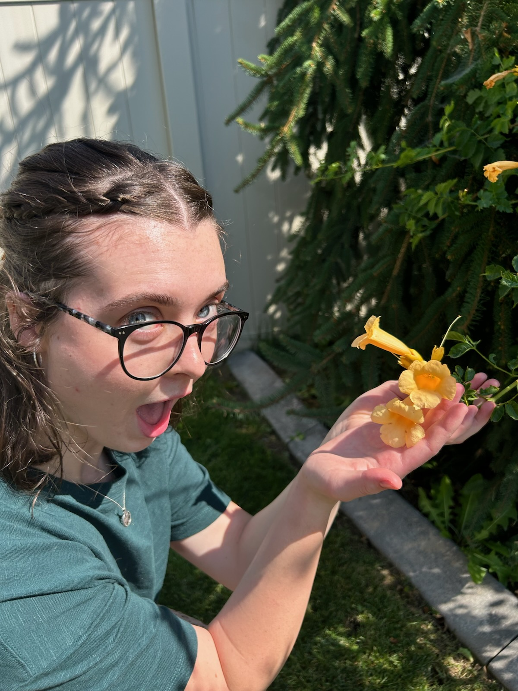

About the Creator
Hey there, fellow nature lovers and tech enthusiasts! My name is Madison Rollins, and I'm a college student with a passion for all things tech and a deep love for the great outdoors. I'm always looking for ways to combine my interests, and that's where my fascination with BD-1, the adorable exploring companion from Star Wars Jedi: Fallen Order, comes in. I'm inspired by BD-1's helpful nature and its ability to assist Cal Kestis on his adventures. I envision creating my own version of BD-1, a robotic companion that can join me on my outdoor explorations. I'm currently working on developing a prototype of my BD-1 inspired robot. It will be equipped with various sensors and tools to help me navigate the wilderness, identify plants and animals, and even capture stunning photos of my adventures. I'm also planning to incorporate AI capabilities into my creation, allowing it to learn and adapt to my needs. I believe that technology can be a powerful tool for enhancing our connection with nature, and I'm excited to share my journey of creating my own BD-1 with the world. Stay tuned for updates on my project, and let's explore the wonders of nature together!
- 🌱 Passionate about plants and technology
- 🌍 Exploring the great outdoors
- 🤖 Creating my own BD-1 inspired robot
- 📸 Capturing nature's beauty through photography
- 💡 Combining tech and nature for a better world
Dreams for BD-Bud
- 🌱 Adding more plant pals to our database! (So you can meet even more leafy friends!)
- 🌼 Creating fun plant care tips and tricks! (To help your green buddies thrive!)
- 🌿 Building a community where plant lovers can share their discoveries! (Let's grow together!)
- 🌸 Making BD-Bud even easier to use, with even cuter surprises! (Because learning should be fun!)